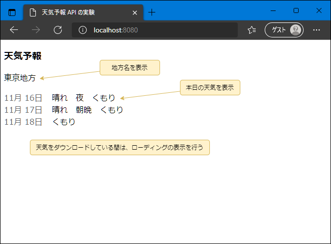
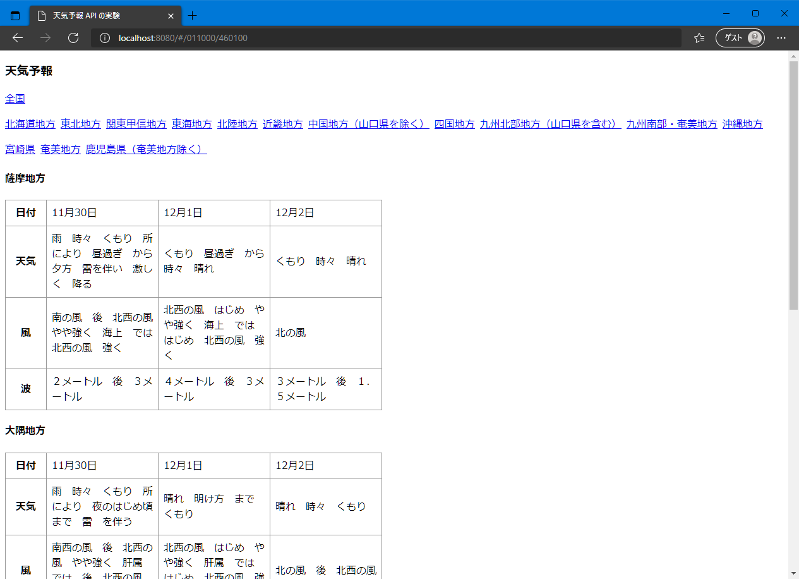

非同期処理の React での実践
目的
ここでは、React アプリの作成を通して、JavaScript での非同期処理の扱いを学習します。
Promise や async / await を使った関数を作成し、それを呼び出すコードを書くことで、非同期関数の扱いを学びます。
アプリの目的
気象庁が天気予報の情報を API で提供しています。
正式には、公開されているAPIではありません。気象庁がホームページで利用している API を拝借しているだけです。
なので、公式のドキュメントもないですし、気象庁の都合で変更される可能性があります。
利用に関しては、政府標準利用規約に準拠する必要があります。
アプリ仕様

- 画面表示時
- 下記URLから、非同期でデータをロードする。
https://www.jma.go.jp/bosai/forecast/data/forecast/130000.json - ロード中はそれがわかるように、スケルトン・ローダーを表示する。
- データが取得できたら、天気を日付別に表示する。
- データには、複数の地方の情報が入っているが、一番上のデータを表示する。
- 下記URLから、非同期でデータをロードする。
他の都道府県の天気予報を取得する場合、
130000.jsonの数値を書き変えます。
都道府県ごとのコードは、下記で確認できる。
http://www.jma.go.jp/bosai/common/const/area.jsonスケルトン・ローダーは、npm パッケージ
react-loading-skeletonを利用します。
プロジェクトの準備と動作
前提条件
PCに下記がインストールされていることを確認して下さい。
node.js@12.x+yarn@1.x
yarn@1 は、
npm install -g yarnで入ります。
スタートアップ プロジェクトの展開と実行
-
今回のプロジェクトとして、スタートアップZIPを用意しています。これをフォルダに展開して下さい。
この中には、既に Webアプリとして動作するものが入っています。
-
ターミナルから、
yarn installを実行します。 - ターミナルで
yarn serveを実行すると、Webアプリが起動します。
天気予報が表示されたと思いますが、これは通信を行って取得したのではなく、JSONファイルから取得して表示したものになります。
そのJSONファイルも、Webpack で同梱したも、つまりハードコーディングしたものになります。
データの読み込みとして、src/WeatherNews.tsx で loadWeatherNews 関数を定義しており、setTimeout を使って、非同期の処理をシミュレートしています。
これを、天気予報のURLから動的に取得するように変更します。
コールバック関数による事後処理
まずは、Promise を使わずに、コールバック関数で事後処理を書きます。
loadWeatherNews関数では、既にコールバック関数が定義されており、一定時間後にこのコールバック関数を実行するようになっています。
1 2 3 4 5 | |
まずは、URLからデータを取得するようにします。最近のブラウザでは、fetch関数が実装されており、それでデータを取得することができます。
1 2 3 4 5 6 7 | |
fetch自体、Promise を返す関数なので、then を使っています。
レスポンスの .json で、レスポンスデータを JSON パースしてオブジェクトを返します。
これも Promise 関数になっているので、この then でコールバック関数を実行しています。
保存して実行してみます。
本日と明日（時間帯によっては明後日も）の天気予報が表示されたでしょうか？
一応、正しく動きますがネストが深いですね。Promise 化することで、コードをもっとスッキリさせましょう。
関数のプロミス化
まずPromise を使っているのに、.then がネストしているのはもったいないです。
このコードは下記のように書き変えることができます。
1 2 3 4 5 6 7 | |
だいぶスッキリしました。
.json は、Promise関数なので、そのまま return して、メソッドチェーンで .then でその結果を受け取ります。
保存して実行して、結果が変わらないことを確認します。
次は、loadWeatherNews 関数自体も Promise 化して、この関数を使う側のソースコードがスッキリ書けるようにしましょう。
1 2 3 4 5 6 7 8 9 10 11 | |
引数のコールバック関数を廃止し、new Promise したものを return するようにしました。
使う側で .then で結果を受け取るために、resolve でロードしたデータを渡しています。
また TypeScript では、Promise で返す値の型を明示する必要があります。Promise にジェネリック型で指定します。
使う側はこのようになります。
1 2 3 4 5 | |
保存して実行して、結果が変わらないことを確認します。
これでも良いんですが、そもそも fetch や .json が Promise を返すので、それをそのまま return することもできます。
使用側は何も変わりません。
1 2 3 4 5 6 7 8 9 | |
かなり簡潔になりました。このように、Promise をそのまま返すことで関数を Promise 化することもできます。
async / await を利用する
Promise でも 全く問題はないのですが、async / await を使ってさらにコードを読みやすくします。
関数に async をつけて、非同期関数（実際には、Promise を返す関数）として宣言します。
fetchと.json の呼び出しで、await をつけて実行が完了するまで、それぞれの行で停止するようにします。
最後に .json の結果を返します。
1 2 3 4 5 | |
ソースが単純明快になりました。非同期関数を Promise をあまり意識することなく書くことができるのがわかるかと思います。
これでも、前のソースと同じで Promise を返す関数なので、使用側のコードは変わりません。
保存して実行して、結果が変わらないことを確認してみてください。
まとめ
非同期関数を作成して、それを利用したアプリを動かしてみました。
今回使用した fetch や axios などのHTTPクライアントのライブラリ、Node.js の DB クライアントやファイル操作など、I/O を行うライブラリは、その殆どが Promise化されており、自作の Promise 関数を作ることは、多くはないのではないかと思います。
ただ、await を使う場合は、async の関数である必要があり、つまりそれは Promise 関数を作ることになります。
ですので、Promise の扱いを身につけておく必要があります。
おまけ
下記に、フルバージョンとして、全国の天気を見ることができソースを置いています。
WeatherNews.tsx の内容を差し替えて、AreaType.ts ファイルを追加して下さい。
React の参考としてください。
https://github.com/rits-ebihara/webdev-study/blob/main/async-functions/src/WeatherNews-full-version.tsx
https://github.com/rits-ebihara/webdev-study/blob/main/async-functions/src/AreaType.ts
